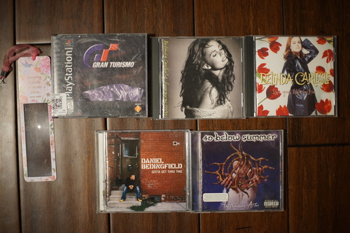
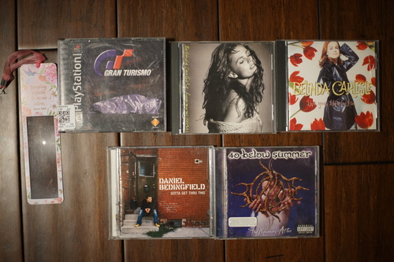

I hope you are all ready for "minor happenings in the life of hat"~
I noticed a white dot in the distance of the Grounds the other day. Just tiny in the center of the frame!!
I grabbed my camera and went out with Ryan to investigate the White Dot. It was kissing mushrooms!?!
About 24 hours later, we went back out to find the kissing mushrooms had become dripped ink mush gross!!

These are shaggy ink caps! Apparently, if I had harvested them when I first found them, I could have made some very stinky ink out of them. Maybe next time!
We had another visitor lately on the Grounds. I didn't think I had enough time to switch to my zoom lens, but I regret not taking a moment to do it!
I played red rover with him trying to get these shots.
Unfortunately, he started eating the fig trees so Ryan chased him off.
 

Ryan isn't sure if this one is pickled.
They changed the design to be a cute honeycomb pikachu?!
All the pokemon stuff was free from the pile at the local card shop. I was quite pleased to see my domestic terrorist boyfriend, N, and his loyal steed, Reshiram, there! Did you know he has a castle?? I really need to finish this game.
For the pens worth keeping from the bag we have, 2 kind of boring pink and purple pens, 1 green gelly roll and 7 glitter gelly rolls, 4 Pentel metallic gel rollers, counterfeit detection pen, Sheaffer NoNonsense fountain pen, FaberCastell Coloray colored pencils. I'm not sure I'll keep everything.
Obviously, the reason I bought it was the Sheaffer No Nonsense pen! It's not a major score or anything, but it is fun enough for the price of the bag. This pen was sold as a budget pen for many years. This one was still made in the US and does not have the rubbery grip that caused issues with later versions. The nib is italic F.
I tried installing the cart and found the section was not sharp enough to pierce it! A lot of modern carts will have little plastic stoppers that are meant to be displaced with inserted, so I was really confused as I was installing it. I ended up smashing the top of the cart, making it unusable. I'll have to find a used cart or buy a converter for it.
Omake: A strange double egg?! The second yolk was so small!